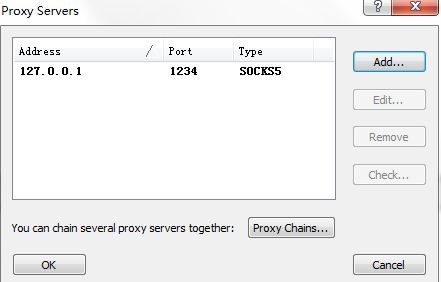
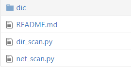
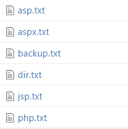

这是一个搭配reGeorg工具使用的内网扫描脚本。
当我们利用weshell做代理内网渗透时，reGeorg是一个常用的手段。windows下reGeorg搭配proxifier，能够访问webshell所在的内网机器。
简单说下reGeorg使用：
将对应的tunnel脚本上传到webshell服务器后，在本机运行reGeorgSocksProxy.py做代理，-p 设置端口
python reGeorgSocksProxy.py -p 1234 -u http://xx.com/tunnel.jsp
然后运行Proxifier，配置一个代理服务器，port是上一步设置的端口，然后就可以欢快地访问webshell所在内网的其他服务器了

为什么写了这么个工具呢
当你在shell服务器中，获取到多个内网网段时，这时就会想批量地检测一下哪些ip开了http端口，可是很多工具是不经过我们的代理服务器的，一时又想不起来什么可配置socks5代理的扫描器。只是差了一小点，与其不去找工具了，写个脚本吧。
需要的环境和包：
- Python 2.6+
- pysocks(使用socks代理)
- win_inet_pton（解决windows下pysocks报错）
和常规http请求的python程序不同的地方，只是多配置了一个socks代理，相当于把Proxifier的功能搬到程序中，几行代码而已；之后就进行正常的http请求，requests或者urllib2都可以
def scan():
SOCKS_PROXY_HOST = '127.0.0.1'
SOCKS_PROXY_PORT = 1234
……
default_socket = socket.socket
socks.set_default_proxy(socks.SOCKS5, SOCKS_PROXY_HOST,SOCKS_PROXY_PORT)
socket.socket = socks.socksocket
程序中设置了常用端口：
ip_port = [22, 80, 443, 3389, 6379, 7001, 8080, 27017]
使用方法：python net_scan.py –ip 192.168.10.0/24
扫描完成后在当前目录生成一个txt文件
进击的功能
程序到这儿非常简单，然后就想说为什么不干脆扫一下敏感路径呢。于是添加了一个扫路径功能，程序结构变成了这样

使用时，先在dic文件夹中添加字典，命名规则必须是这样：

net_scan.py中调用dir_scan.py中的方法,dir_scan.py是一个类，所以稍微修改一下也可以单独使用。如果不想使用路径扫描功能，将程序最后下列代码注释（毕竟如果ip列表和字典大了会比较慢）：
batchScan = batch_scan(success_list)
batchScan.getList()
batchScan.run()
dirScan_path = str(time.strftime('%Y%m%d%H%M%S',time.localtime(time.time())))+'_'+str(ip_lists[0])+'_dir.txt'
for url in batchScan.successList:
saveFile(url,dirScan_path)
为什么字典命名要固定,这里是由于程序自动筛选字典，根据header中的信息，来选择字典：
powered_by = headers['x-powered-by'].lower()
server = headers['server'].lower()
if ('php') in powered_by:
self.choose_dic('php')
elif ('asp') in powered_by:
self.choose_dic('asp')
self.choose_dic('aspx')
elif ('jboss' and 'java' and 'jsp' and 'weblogic') in powered_by:
self.choose_dic('jsp')
elif ('tomcat') in server:
self.choose_dic('jsp')
elif ('centos' and 'linux' and 'redhat') in server:
self.choose_dic('php')
self.choose_dic('jsp')
由于测试比较少，所以只提取了x-powered-by和server，而且匹配的字符也比较少，如果没有匹配到信息默认选择dir和backup字典，之后有空会优化~
扫描结束后也会生成txt文件
程序地址：https://github.com/kovige/NetScan
不要在意程序里那些细节，毕竟我是个女同学，就是这样！